24K views on one tip. 849 people saved it.
SmallTalk2Me is an AI app for practicing English: IELTS speaking, job interviews, business calls. I ran their social content as one system: creator videos, carousels, UGC photo carousels and daily stories. Everything was built to be useful first, so people save it and come back.
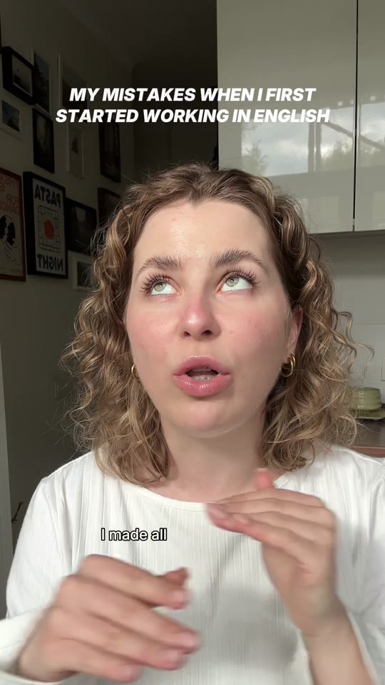
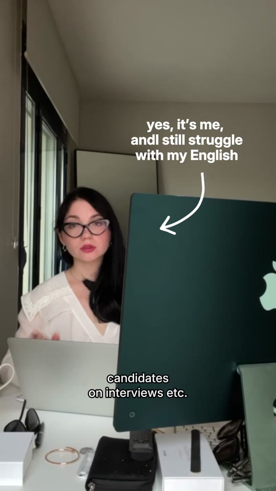
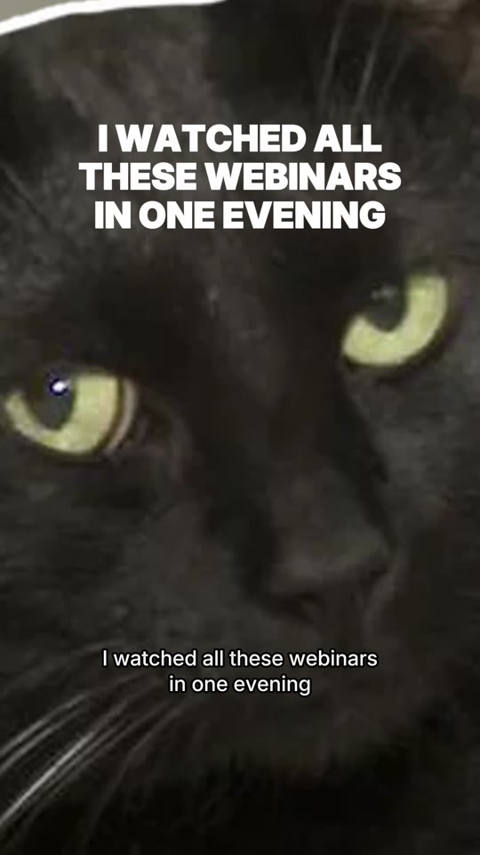
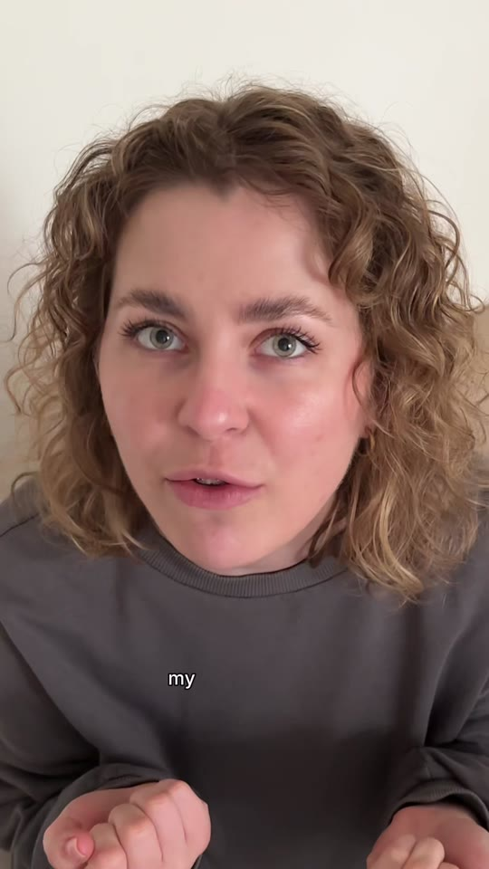
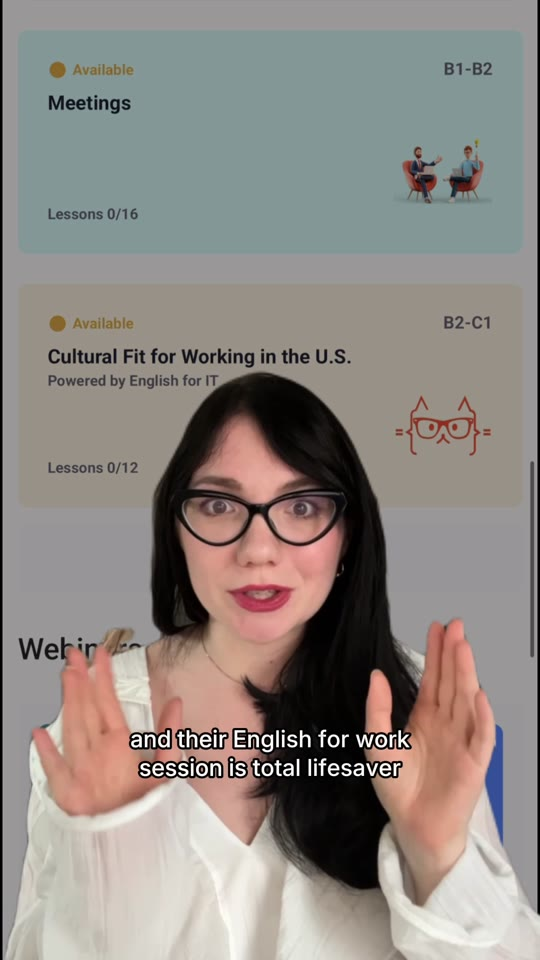
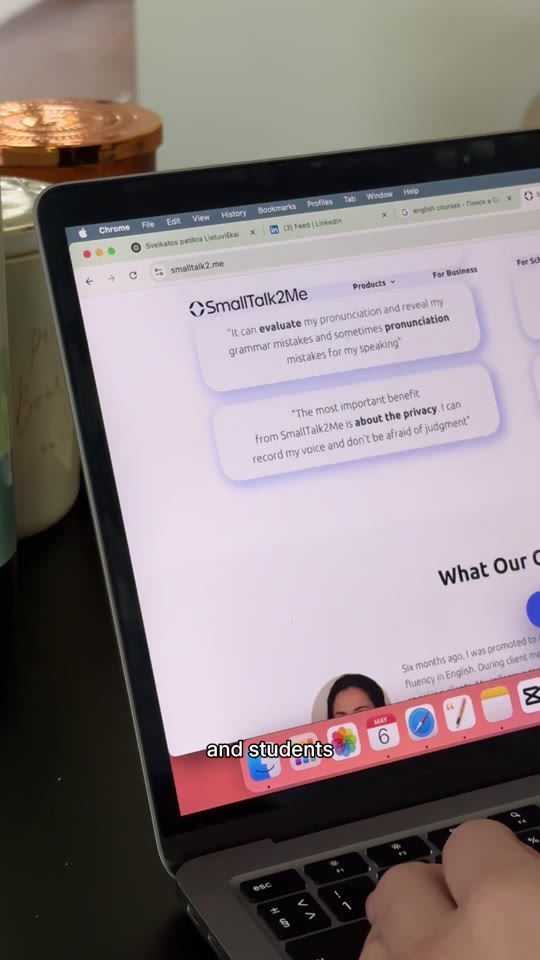
A confession, then the fix.
Nobody wants an ad for an English course. Everyone recognizes the moment they froze on a call. So every video opened with a creator admitting a real struggle and ended with the app as the thing that helped. I wrote the scripts, directed the creators and cut the videos with fast captions and small motion accents.
"My mistakes"
A creator lists what went wrong when she started working in English.
"I still struggle"
A hand-drawn arrow, a wink to camera. Honest beats polished.
Show the practice
The app on a laptop, right before a real meeting.
A beat of humor
"I watched all these webinars in one evening." A cat says it best.
Saves, not views.
For a learning app, a save means "I'll practice this later". That's a person planning to come back. The best creator video, a lazy IELTS tip, got 24,100 views on TikTok and 849 saves. A list of the top three IELTS prep websites got 4,586 views and 192 saves.
For marketersThe practical tips here were saved by 3.5% to 4.2% of everyone who watched. If your product teaches, measure saves before views.
| Video | Views | Saves | Save rate |
|---|---|---|---|
| Lazy IELTS tip | 24,100 | 849 | 3.5% |
| Top 3 IELTS prep websites | 4,586 | 192 | 4.2% |
| Work English, second creator | ~1,000 | TikTok, plus 500 to 900 on Instagram | |
TikTok numbers from the creators' own accounts.
Lessons people swipe to the end.
Each carousel was one small lesson with a framework you can use today. PREP for IELTS speaking. Five podcasts for listening. Phrases for opening a business call. Mobile first, big type, one idea per slide, the app only on the last slide.
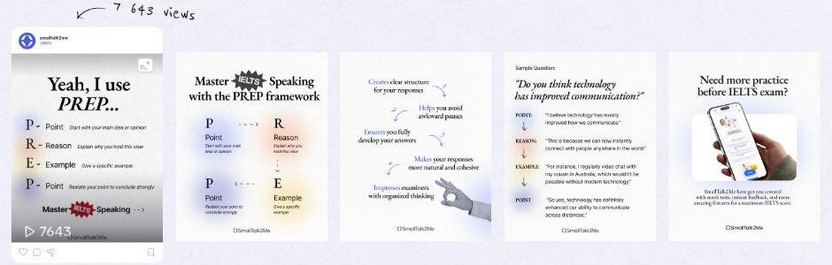
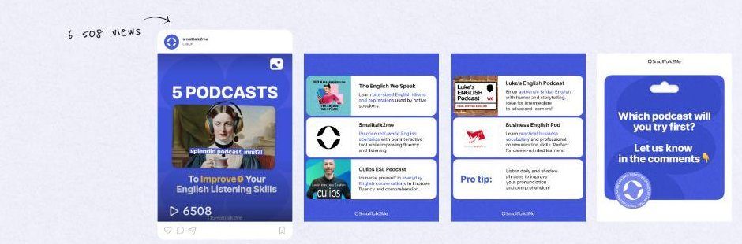
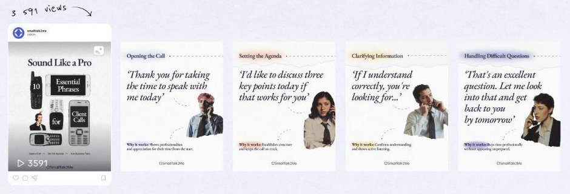
A creator's photos, a teacher's tips.
UGC carousels were the cheapest thing to make and some of the best to perform. A creator puts a real IELTS score on the cover, then each of their own photos carries one tip. It reads like a friend's photo dump, not a course.
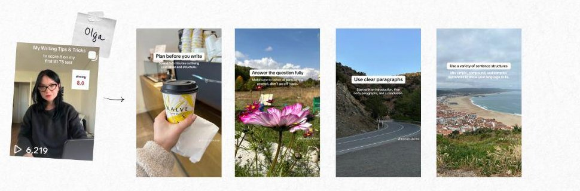
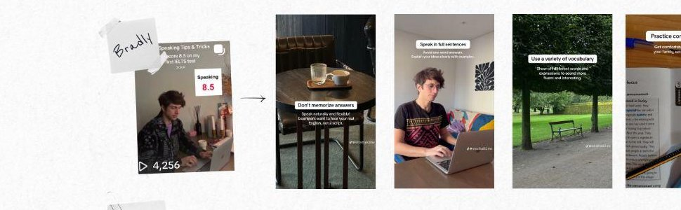
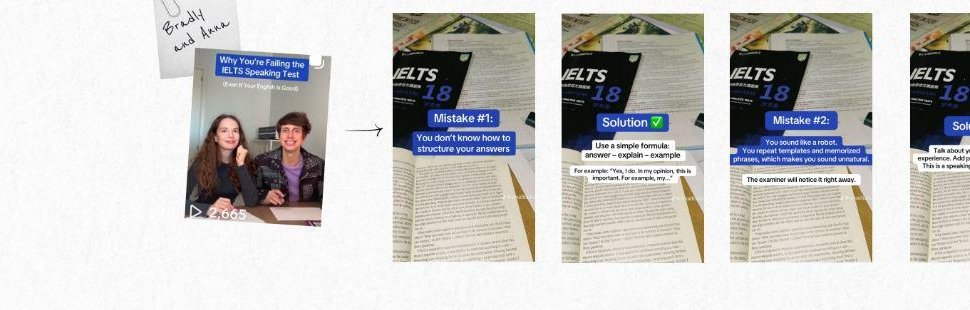
Every day, every format.
In the first month alone the account got 9 posts, 11 videos and stories every day. Over the project that added up to more than a thousand stories: vocabulary, memes, polls, phrasal verbs. For B2B I also made LinkedIn visuals aimed at recruiting agencies hiring people who work in English.
For marketersStories are where a learning app stays in someone's day. Posts bring people in, stories keep them practicing.
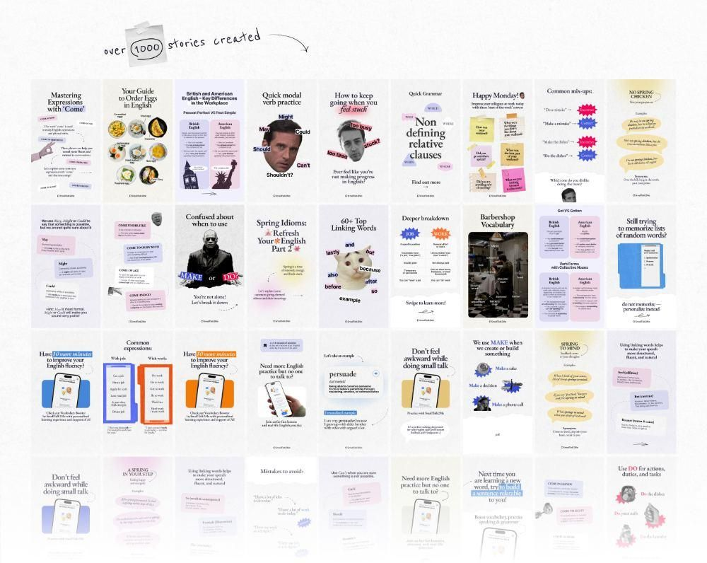
Admit the struggle
Creators who confessed their mistakes got further than creators who explained grammar.
Make it worth saving
A concrete tip or a framework turned viewers into people who came back.
UGC can be a photo
Photo carousels with a real score on the cover cost little and held their own against video.
Content people save is content that sells.
For learning apps, edtech and any product that teaches. I build a content system where creator videos, carousels and stories all do one job: be useful enough to keep.
Competitors and the questions your users ask.
Confession hooks and practical tips.
Creators who are real learners.
Carousels, stories, ad creatives.
Saves and views, every week.
See how other brands did it.
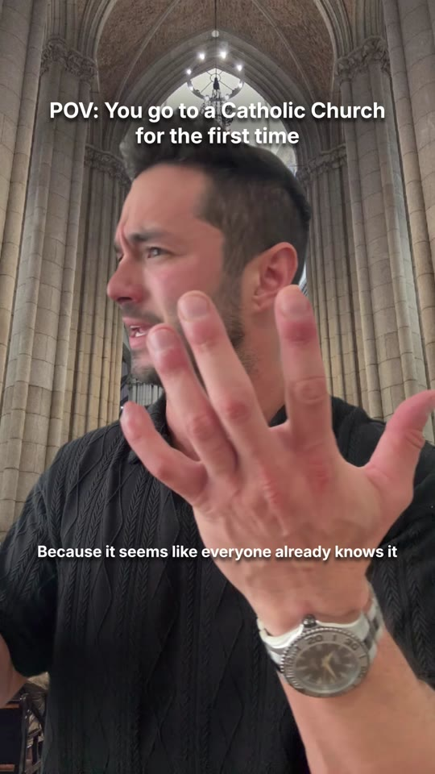
Your Christian DateB-roll library, 60 videos a month and an 800K Reel.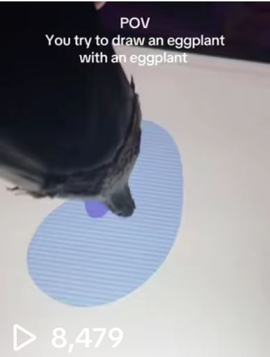
Drawing AppFaceless canvas UGC, 1.5M organic views.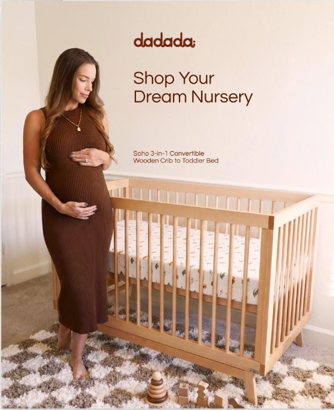
Dadada BabyAI product visuals built from customer photos.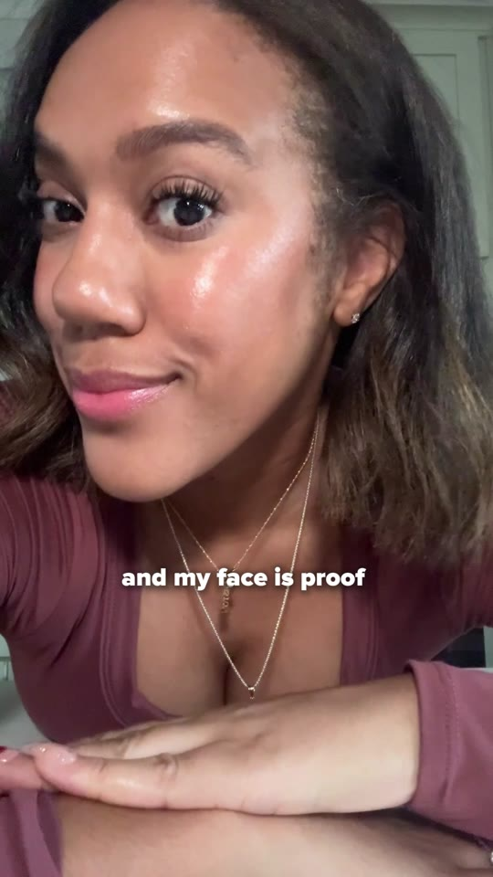
Supplement Brand16 creator videos, 48 hook versions to test.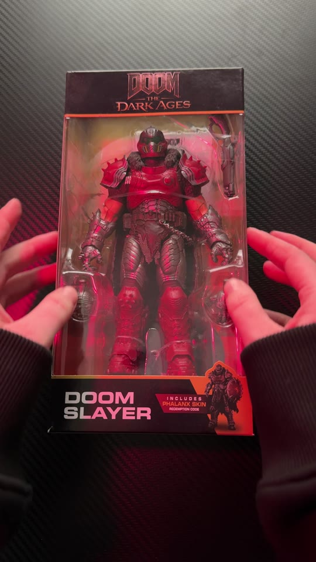
Fragstore40 videos a month from one shoot day.